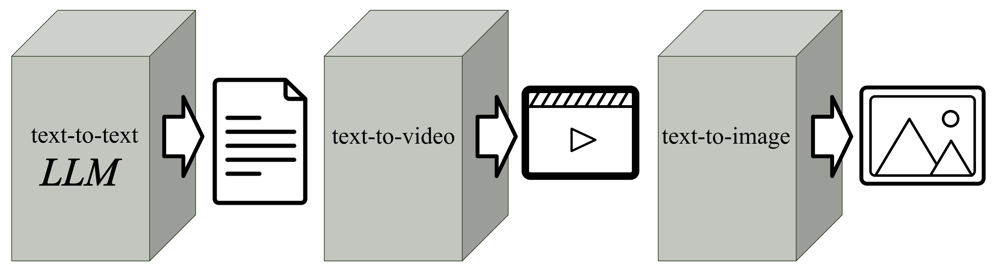
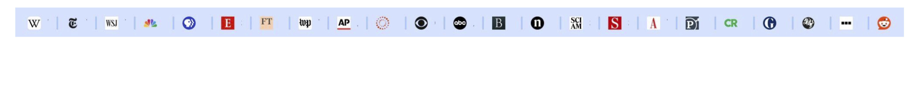
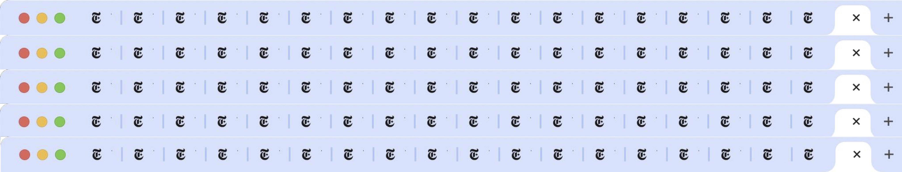
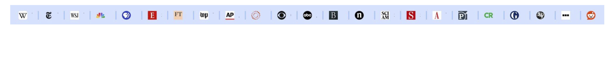
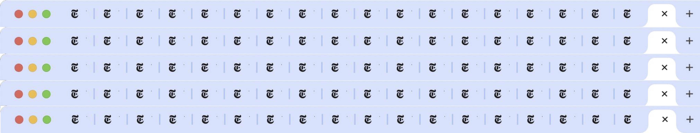

AI Literacy Workshop
Table of Contents
- AI Literacy Workshop
- Generative AI
- Large Language Models (LLM)
- Retrieval Augmented Generation (RAG)
- AI Search
- Glossary
Generative AI
Generative AI refers to tools that can create new content - text, images, video, code, even music - based on written or spoken prompts. These systems are designed to recognize patterns in data and generate outputs that look and sound like human-created work.

This gives students and researchers remarkable power: you can brainstorm ideas, visualize complex concepts, or rehearse how to explain them. But be cautious: just because AI can generate content does not mean that content is accurate, verified, or most importantly: appropriate to cite as an authority. Always consult your instructor or course syllabus to determine whether using generative AI is permitted in your coursework.
| Tool | Description |
|---|---|
| Microsoft Copilot | Microsoft Copilot is an AI assistant built into Microsoft 365. Copilot functions as a traditional AI-powered chatbot enabling it to summarize, analyze, and generate text and code. Copilot is the default generative AI tool at Baruch College because the CUNY-secure deployment ensures that data stays within the protected institutional environment and is not shared externally. While Copilot is widely available to the public, students and faculty should access the data-secure version through Microsoft Office 365 on the web or local installation. |
| OpenAI ChatGPT | ChatGPT, powered by OpenAI’s GPT models, is widely regarded as the industry standard for conversational AI. Known for its versatility and fluency, it is a powerful general-purpose model that can generate, summarize, and analyze text across a wide range of domains. |
| Google Gemini | Gemini is Google’s multimodal model, designed to natively understand and work with text, images, video, and audio. It represents Google’s flagship LLM platform and integrates tightly with other Google products and services. |
| Anthropic Claude | Claude, developed by Anthropic, emphasizes safety and ethical alignment through an approach known as “Constitutional AI.” It is designed to reduce harmful outputs while still being a capable and versatile conversational model. |
| Meta Llama 3 | Llama 3 is Meta’s open-source family of Large Language Models, freely available for developers and researchers. It is widely used in academic and industry projects, offering strong performance with flexible licensing compared to commercial models. |
| Mistral | Mistral AI is a European startup developing powerful open-source and commercial LLMs, emphasizing efficiency and smaller models that run well on limited hardware. |
Large Language Models (LLM)
Artificial Intelligence is undoubtedly reshaping how we access, evaluate, and create information. From chatbots to research assistants, AI tools are increasingly part of everyday academic life. This teaching note focuses on a crucial piece of AI Literacy: understanding how large language models like ChatGPT, Gemini, and Claude work - and how they influence the way students and researchers discover, retrieve, and interact with information.
Although this note is focused on “AI Literacy,” the key part of understanding modern AI for information retrieval is maintaining a strong command of text-based Generative AI tools. This primarily means understanding the Large Language Model (LLM) with a focus on the inner-workings of popular chatbots powered by LLMs like OpenAI’s ChatGPT and Google’s Gemini.
The large language models that power popular technologies like ChatGPT and Gemini also drive many other AI tools discussed in this guide. These include specialized applications such as research assistants (e.g., Elicit) and consumer-facing Retrieval-Augmented Generation (RAG) tools (e.g., Google’s NotebookLM).
There are no doubt noteworthy developments in other frontiers of AI including advances in computer vision (e.g. self-driving cars, medical image recognition) and speech recognition (e.g. Amazon Alexa, Apple Siri), but in the domain of libraries and information literacy, “AI literacy” is a crucial skill that begins with a deep understanding of large language models and the popular models currently embraced by students and researchers.
Inside the Black Box: Understanding LLM Input and Output
Every time you use an AI chatbot like ChatGPT, you’re participating in a process that begins with your prompt and ends with a generated response. But what happens in between?
This process can be broken down into three steps: input, model, and output.
| Components | Description |
|---|---|
 |
Input: The input is what you provide to the LLM, but it’s more than simple text limited by traditional lexical matching. Modern LLMs use Natural Language Processing (NLP) to understand the meaning and intent behind your query, going beyond simple keyword matching. To get the best results, you need to use effective prompt engineering practices. This involves carefully crafting your query with clear instructions, context, and constraints to guide the model’s output toward your desired goal. The quality of the input will influence the quality of the output. |
| LLM (The Brain): The central component here is the LLM, which acts as the “brain” of the operation. This is where the core of the AI technology resides. The LLM’s capabilities are a direct result of its training, a process where it learns patterns, relationships, and knowledge from a massive dataset. The volume of data required is immense, often consisting of trillions of words scraped from a wide variety of sources, including websites, books, and academic papers. This training phase is computationally intensive and is what allows the model to generate coherent and contextually relevant text. | |
 |
Output: The output is the response generated by the LLM. The quality and reliability of this output are ultimately determined by the data the model was trained on. Understanding the model’s training data is crucial for determining if you can trust the output. If the training data is biased, incomplete, or contains inaccuracies, the model may generate false or nonsensical information, a phenomenon known as a hallucination. Therefore, evaluating the output involves not only checking for factual accuracy but also considering the potential for bias and the model’s limitations. |
Understanding What LLMs Know… and What They Don’t
To evaluate the output of a large language model, it’s essential to understand what data the model was trained on. For this, a powerful principle applies: “the data is the model.”
Most foundational LLMs are trained on massive collections of publicly available web content - things like Wikipedia, Reddit, open-access articles, and code repositories. However, they largely exclude the significant body of knowledge contained in paywalled academic databases, dynamically generated web pages, and freely-accessible databases that aren’t easily crawlable.

Furthermore, a good deal of the most granular, timely, or academically significant data - local demographic statistics, scientific datasets, legal records, archival government data, and even historical real estate trends - lives in what we call the deep web. While technically available online, this information often requires interaction with forms, lives inside JavaScript-heavy interfaces, or is structured in ways that automated crawlers (and thus LLM training pipelines) struggle to access. If a search engine did not index it, an LLM likely did not train on it.
As a result, when you ask an LLM a question, you’re interacting with a system that has learned from a specific and limited subset of the web - not the full breadth of human knowledge. That’s why LLMs sometimes hallucinate or fail to answer questions that rely on specialized or hard-to-reach information. They simply haven’t seen it.
Large Language Models are trained on vast collections of publicly available data, giving them a broad foundational knowledge that often aligns well with the needs of undergraduate students and general education.
While this accessibility makes LLMs appealing as educational tools, their use in academic settings is still a topic of debate. Within the classroom, scholars and instructors continue to question how these tools will affect teaching, learning, and the development of critical thinking. As tools of research, LLMs need to be treated with caution.
It’s imporant to recognize the limitation of LLMs in conducting research. LLMs can be useful tools for brainstorming, summarizing, explanation and exploration - but they are not replacements for scholarly databases, specialized research tools, or the expertise of librarians. Valuable information remains in both library databases and the deep web - and navigating that terrain still requires human guidance and domain-specific resources.
The Dominant Large Language Models

In today’s AI landscape, OpenAI’s ChatGPT, Google’s Gemini, and Anthropic’s Claude currently stand as the three dominant Large Language Models available for public use.
They are all highly capable, general-purpose models that have been trained to understand and generate human-like text, allowing them to excel at a wide range of information tasks.
Note that LLM powered chatbots are all commercial products that operate under a business model. While commercial LLMs provide a “free” tier of usage, they also offer different tiers of service and are ultimately not free for full usage of all AI tools, features and applications.
At Baruch College, Microsoft Copilot is the preferred AI chatbot. Based upon OpenAI’s GPT-4 models, Microsoft Copilot is an AI assistant built into Microsoft 365 applications like Word and Excel. Similar to popular AI-powered chatbots like ChatGPT and Google Gemini, Copilot maintains a Large Lange Model (LLM) powered chat feature that enables it to summarize information and answer questions,
Data privacy remains a significant concern for the use of many AI tools. As such, Microsoft Copilot is the default generative AI tool at Baruch Colllege because all data submitted stays within the secure CUNY environment and is not shared or used to train external models.
Retrieval Augmented Generation (RAG)
AI Search
AI Assisted Research
AI tools powered by Large Language Models are reshaping research by moving beyond simple keyword matching. These AI search tools now interpret the meaning behind your questions, analyze large volumes of content, and deliver clear, summarized insights. As AI continues to advance quickly, it will likely transform how we search for, engage with, and understand information.
Smarter Searching: Use AI to Expand Your Keywords and Enhance Your Search

Traditional search, like a library catalog, finds resources by lexical matching - it directly matches your search terms with keywords in the resource’s metadata, such as its title or author.
A drawback of lexical matching is you can unknowingly miss potential resources unless you exhaustively search all relevant keywords:


  
 